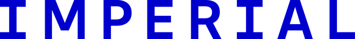
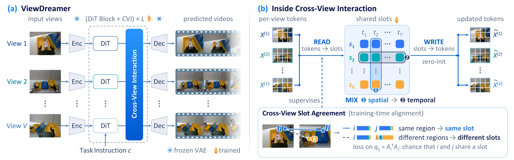
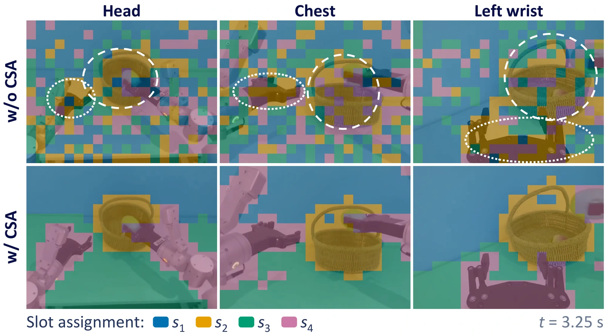
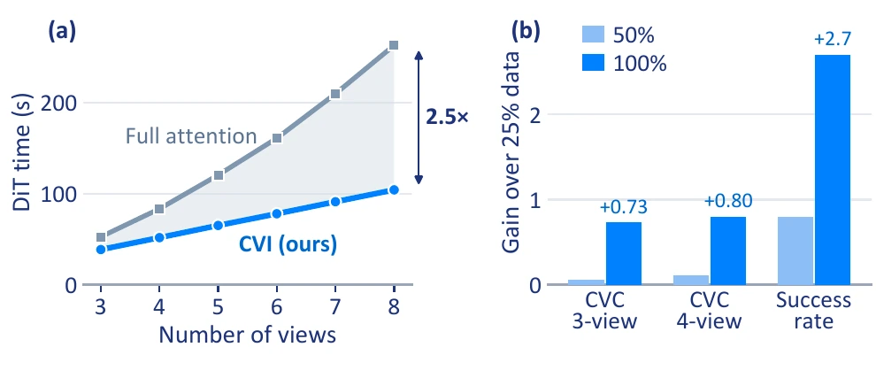
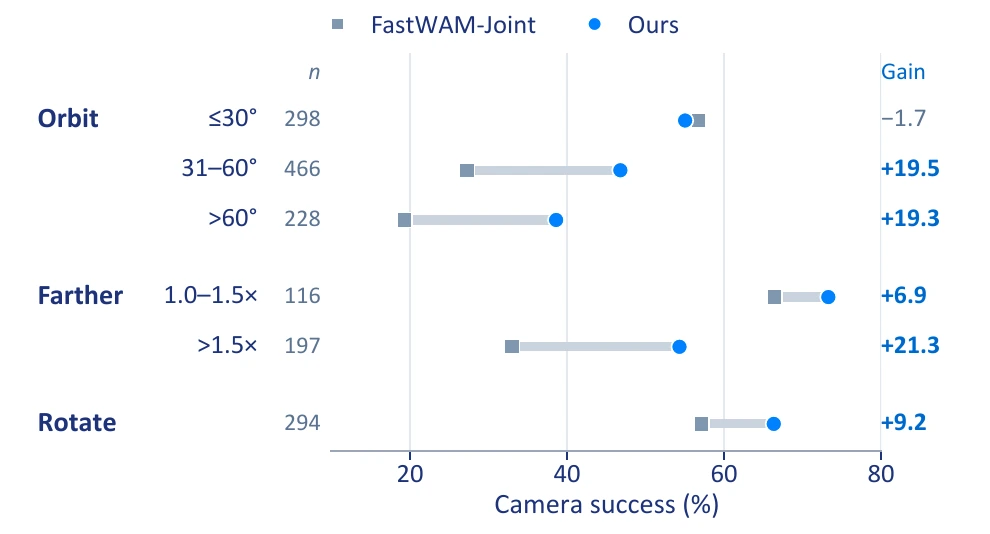
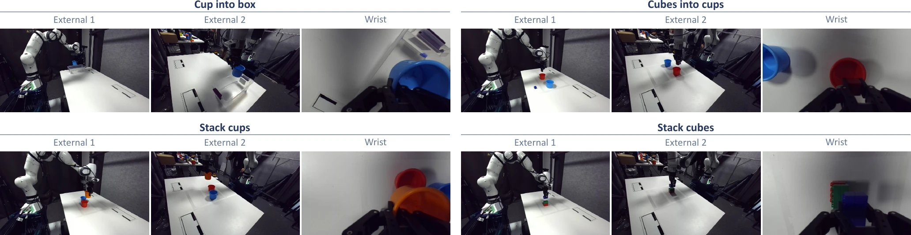

ViewDreamerA Robot World Model beyond Fixed Camera Setups
1Meta AI 2Imperial College London
*Work done at Meta

Abstract
Video generation models are increasingly important for robot learning, yet most generate each camera view separately or tile all views in a fixed layout. Robot demonstrations, however, are captured by synchronized cameras whose number, placement, and order vary across embodiments. We present ViewDreamer, a single world model that handles variable sets of cameras by disentangling per-view generation from cross-view interaction. Each view follows the generation path of a pretrained single-view model, and views interact only through shared slot tokens. We stabilize multi-view training with a curriculum that gradually increases the number of views. Cross-View Slot Agreement uses visual foundation models to group geometrically and semantically similar regions across views into shared slots. On RoboView-Bench, which covers one to four cameras, ViewDreamer achieves the best generation quality among the models evaluated and improves cross-view consistency over independent per-view generation. These gains carry over to our world-action model (WAM) and action-conditioned world model (AC-WM). Our WAM outperforms the FastWAM-Joint baseline on LIBERO-Plus, RoboTwin 2.0, and RoboDojo, and on a real Franka robot. Both variants improve out-of-domain generalization to various camera settings and scenes.
Better multi-view video
FVD falls from 32.93 to 25.41 and cross-view consistency rises from 69.3 to 75.7 against Wan2.2-5B fine-tuned on our data.
Robust to new viewpoints
When the LIBERO-Plus third-person camera orbits the scene by more than 30°, success rises from 24.6% (FastWAM-Joint) to 44.1%.
Stronger real-robot policy
On four Franka tasks, our WAM raises the average success rate from 30.0% to 67.5%, and from 20% to 90% on cubes into cups.
Method
Per-view generation, shared cross-view interaction
Every view keeps the generation path of the pretrained single-view video model (Wan2.2-TI2V-5B). A Cross-View Interaction module after every block is the only path between views, so one model runs on any number of cameras in any order.

1Cross-View Interaction
After every block, READ gathers all views into shared slots, MIX exchanges information across slots and time, and WRITE returns it to each view through a zero-initialized projection.
2Cross-View Slot Agreement
A frozen teacher built from DINOv2 and VGGT-Ω links geometrically and semantically similar regions across views. CSA trains the last READ attention so that linked patches share a slot.
3View-Count Curriculum
Training starts from single views and gradually adds more views. Cross-view interaction thus grows out of the pretrained single-view model instead of disturbing it, which stabilizes training.
Slots that agree across views

Without CSA, the slots only partially group regions such as the basket (dashed) and the gripper (dotted), and the groups stay fragmented. With CSA, the same region seen by different cameras falls into the same slot.
- Teacher relations combine DINOv2 semantics and VGGT-Ω geometry and are computed offline.
- The agreement loss only shapes the last READ attention and is dropped at inference.
Scales with the number of cameras
From three to eight views, DiT time per sample grows from 38.5 s to 104 s with CVI, but from 52.5 s to 263 s with full cross-view attention. Each extra view adds a nearly constant 13 s with CVI.
Cross-view consistency and downstream policy success also keep improving as the pretraining data grow.

Multi-view generation
Consistent futures across every camera
Given the first frame of every view and a task instruction, ViewDreamer predicts five seconds of future video for all cameras. Each row is one method and each column one camera. ViewDreamer is outlined in blue.
Instruction
RoboView-Bench episodes from RoboCOIN, 81 frames at 16 FPS. Four-view episodes are out of distribution: training never sees four views.
RoboView-Bench
Best generation quality among the models evaluated
500 held-out episodes with three and four cameras. Wan2.2-5B (FT) is fine-tuned on the same data as ViewDreamer and generates each view independently; the other baselines run zero-shot. CVC measures cross-view consistency between the generated views.
| Method | SSIM ↑ | LPIPS ↓ | FID ↓ | FVD ↓ | CVC ↑ |
|---|
Best value per column in bold.
Downstream transfer
A better prior for robot learning
Our world-action model (WAM) adds CVI to FastWAM-Joint and initializes its video network from ViewDreamer. With the same data and recipe, it improves success in simulation and on a real Franka robot, with the largest gains out of domain.
The gain grows with the camera shift. When the third-person camera orbits by more than 30°, success rises from 24.6% to 44.1%.

Fine-tuned to follow recorded action trajectories, our AC-WM achieves the highest EWMScore in both clean and randomized scenes.
Action-conditioned rollouts
Each AC-WM starts from the real first frame of every view and follows the same recorded action trajectory. The rows compare our AC-WM with Wan2.2-5B and Cosmos3-Nano, each fine-tuned on the same clean RoboTwin 2.0 episodes.
Instruction
Held-out clean RoboTwin 2.0 episodes at 25 FPS, three views each.
Real robot
Rollouts on a real Franka
A Franka FR3 in the DROID setup with two external cameras and one wrist camera. Each policy learns four tasks from 200 teleoperated demonstrations, and we run 10 trials per task.
Instruction
| Success rate (%) | Cup into box | Cubes into cups | Stack cups | Stack cubes | Average |
|---|---|---|---|---|---|
| FastWAM | 40 | 30 | 10 | 20 | 25.0 |
| FastWAM-Joint | 60 | 20 | 10 | 30 | 30.0 |
| Ours | 80 | 90 | 40 | 60 | 67.5 |

Citation
BibTeX
@misc{mao2026viewdreamer,
title = {ViewDreamer: A Robot World Model beyond Fixed Camera Setups},
author = {Mao, Ye and Xiong, Jinhui and Larionov, Egor and Lu, Shiyang
and Mikolajczyk, Krystian and Ye, Wei},
year = {2026}
}